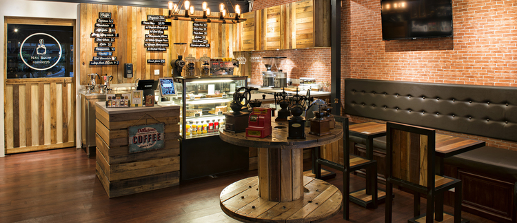
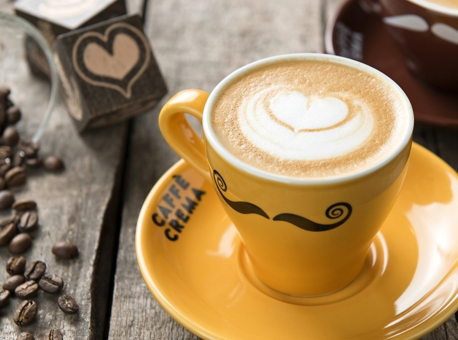

We've been baking and brewing forover 10 years already ! Anyone who's tried our delicious cakes and our signature coffee at least once is now our loyal customer.
Caffé Crema is a boutique café that indulges all-comers in the coffee-drinking experience. The first Mont Kiara outlet features modern recycled wooden fixtures that are given a new lease of life while sofas and chairs are grouped cosily in its 435sq ft interior and a 345 sq ft alfresco area for those who prefer natural sunlight and people-watching. But you really come here for the top-grade, premium coffee and the delicious range of homemade desserts. The affordable offerings that range from RM7.00 to RM16 make it the appropriate setting to enjoy a nice cuppa any day of the week.


For self-confessed coffee connoisseur, come and learn the art of making your own cup of coffee from trained baristas using the Moka Pot – Caffé Crema is the first café in Malaysia to use Bialetti’s iconic coffee maker – and a refractometer to ensure consistency. Dabble also in latte art and doodle away with a pitcher of steaming hot milk as your paint bush and revel in the beauty of creating flowers, hearts and other intricate patterns from micro-foam. This is indeed the place to be and it’s back to the basics of good coffee, good cakes and good company.